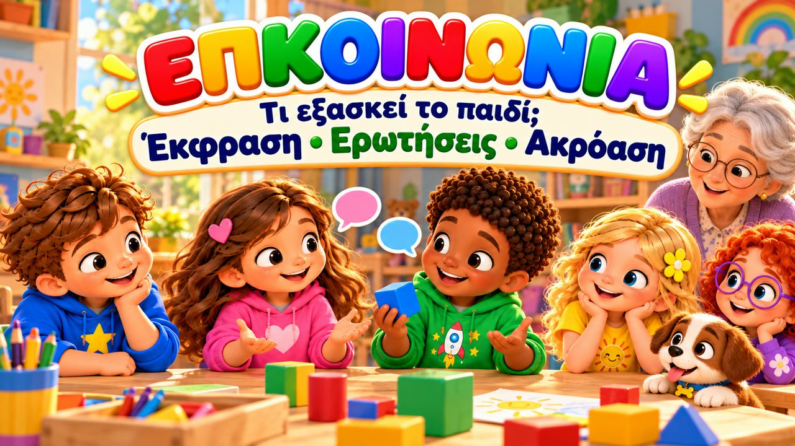
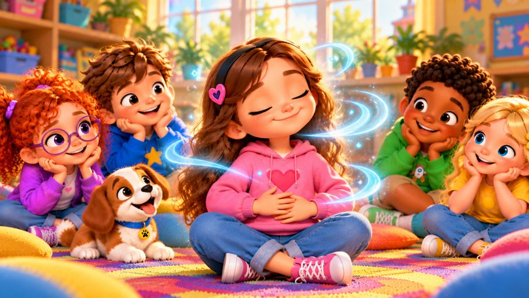
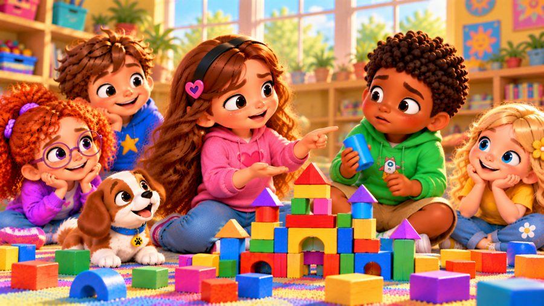
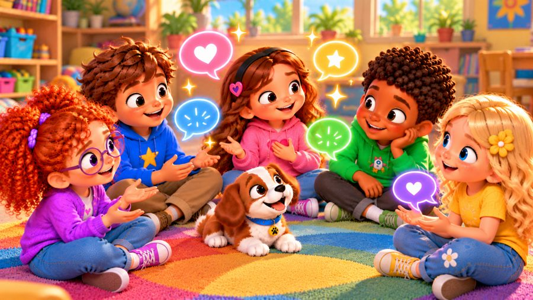
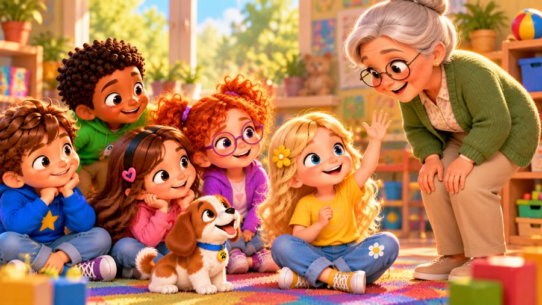
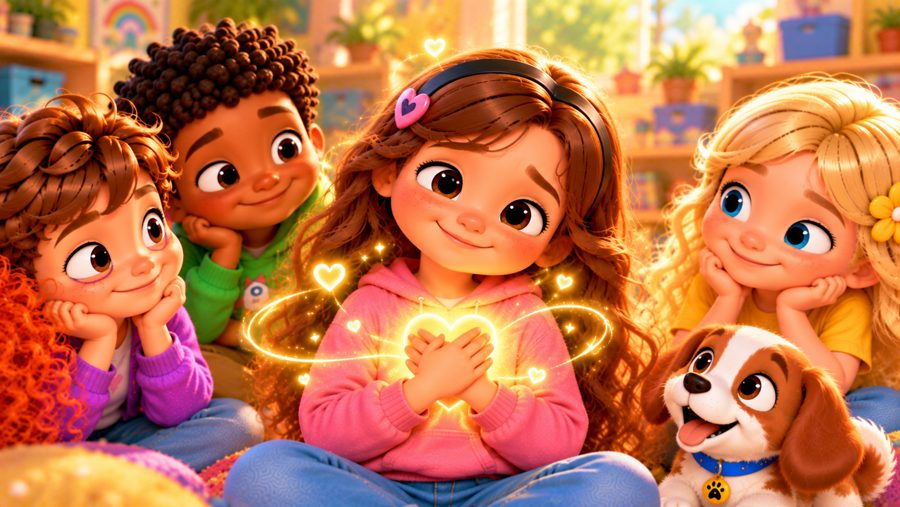

Πες το με λόγια
Ένα τραγούδι για την επικοινωνία! 💬 Τραγουδήστε με τον Μαξ, τη Μία, τον Τζέι, τη Λίλη, τη Ρόζα και τον σκυλάκο Μπάντι, που μαθαίνουν να λένε με λόγια πώς νιώθουν, να ζητούν αυτό που χρειάζονται — και να ακούν κι εκείνα!
Το «Πες το με λόγια» είναι ένα τραγούδι για παιδιά για την επικοινωνία: όταν ο Τζέι παίρνει το μπλε τουβλάκι, η Μία δεν φωνάζει — παίρνει ανάσα και το λέει ήρεμα. Όταν η Ρόζα ντρέπεται να παίξει, ρωτά απλά «Μπορώ να παίξω κι εγώ;» και όταν δεν καταλαβαίνει τους κανόνες, κάνει μια ερώτηση. Με στίχους-καραόκε, για παιδιά 3–8 ετών και τα Εργαστήρια Δεξιοτήτων.

▶💡 Γιατί είναι σημαντικό: Επικοινωνία
Όταν τα παιδιά μαθαίνουν να λένε τι νιώθουν και τι χρειάζονται, οι φωνές, οι αρπαγές και τα κλάματα λιγοστεύουν — και η κατανόηση μεγαλώνει. Η καθαρή και ευγενική επικοινωνία είναι δεξιότητα που θα χρησιμοποιούν κάθε μέρα της ζωής τους. Δώστε τους απλές φράσεις για εξάσκηση («Νιώθω… γιατί…», «Μπορώ να παίξω κι εγώ;») και χρησιμοποιήστε τες κι εσείς.
👨👩👧 Τι μαθαίνει το παιδί
- Να λέει πώς νιώθει: «Νιώθω…»
- Να ζητά αυτό που χρειάζεται: «Μπορείς να με βοηθήσεις;»
- Να μιλά καθαρά και ήρεμα αντί να φωνάζει ή να αρπάζει
- Να ζητά να παίξει και να ρωτά όταν δεν καταλαβαίνει
- Να ακούει όταν μιλά κάποιος άλλος
💬 Κουβέντα μετά το τραγούδι
- Τι μπορείς να πεις όταν κάποιος παίρνει το παιχνίδι σου;
- Πώς ρωτάμε αν μπορούμε να παίξουμε;
🏅 Κουίζ & Πτυχίο
Είδατε το τραγούδι μαζί; Τώρα διαβάστε στο παιδί κάθε ερώτηση — το παιδί δείχνει τη σωστή εικόνα. Αν απαντήσει και στις 6 ερωτήσεις, κερδίζει ένα πτυχίο για εκτύπωση!
🔒 Το όνομα χρησιμοποιείται μόνο για να φτιαχτεί το πτυχίο στη συσκευή σας. Δεν αποθηκεύουμε και δεν στέλνουμε τίποτα.
Τα κατάφερες! 🎉
Και οι 6 απαντήσεις είναι σωστές! Γράψτε το όνομα του παιδιού για να φτιαχτεί το πτυχίο.
🖨️ Δωρεάν εκτυπώσιμα
Δωρεάν για χρήση στο σπίτι και στην τάξη. Εκτυπώστε σε χαρτί Α4.
🖼️ Σκηνές από το τραγούδι






🎵 Κι άλλα τραγούδια


🎤 Στίχοι – Πες το με λόγια
Έχω κάτι που θέλω να πω,
με τα λόγια μου μπορώ!
Δεν χρειάζεται να φωνάζω,
ούτε μέσα μου να το κρατάω.
Παίρνω ανάσα,
σκέφτομαι καλά...
και το λέω καθαρά!
Έπαιζα με τα τουβλάκια,
έφτιαχνα κάτι φοβερό,
μα ο Τζέι πήρε το μπλε κομμάτι
που χρησιμοποιούσα εγώ.
Πήγα αμέσως να φωνάξω,
μα σταμάτησα εκεί.
Πήρα ανάσα και του είπα
ήρεμα, με καθαρή φωνή:
«Το χρησιμοποιώ ακόμα.
Μπορείς να μου το δώσεις, σε παρακαλώ;»
Ο Τζέι μου είπε «Ναι, φυσικά!»
και συνεχίσαμε μετά.
Σκέφτομαι πρώτα
τι θέλω να πω.
Μιλάω καθαρά,
χωρίς να φωνάζω εγώ.
Λέω πώς νιώθω,
λέω τι χρειάζομαι.
Και όταν μιλάς εσύ,
σε ακούω κι εγώ!
Πες το με λόγια!
Πες το καθαρά!
Πες μου πώς αισθάνεσαι,
τι χρειάζεσαι πραγματικά!
Πες το με λόγια!
Ήρεμα και απλά!
Μπορείς να πεις αυτό που νιώθεις
και να ζητήσεις ό,τι χρειάζεσαι σωστά!
«Νιώθω...»
«Θέλω...»
«Μπορείς να με βοηθήσεις;»
Μιλάω κι ακούω,
εγώ κι εσύ!
Πες το με λόγια!
Έτσι μπορούμε
να καταλάβουμε καλύτερα
ο ένας τον άλλο!
Στην αυλή έπαιζαν οι φίλοι,
μα εγώ στεκόμουν πιο μακριά.
Ήθελα κι εγώ να παίξω,
μα ντρεπόμουν λιγάκι να πάω κοντά.
Πήρα θάρρος και πλησίασα,
και τους ρώτησα απλά:
«Μπορώ να παίξω κι εγώ μαζί σας;»
«Φυσικά! Έλα κοντά!»
Δεν ήξερα καλά το παιχνίδι,
κι έτσι ρώτησα ξανά:
«Μπορείτε να μου δείξετε
πώς παίζεται, παιδιά;»
Μου εξήγησαν τους κανόνες,
κι αρχίσαμε όλοι μαζί!
Μερικές φορές μια ερώτηση
είναι ό,τι χρειάζεται στη στιγμή!
Σκέφτομαι πρώτα
τι θέλω να πω.
Μιλάω καθαρά,
χωρίς να φωνάζω εγώ.
Λέω πώς νιώθω,
λέω τι χρειάζομαι.
Και όταν μιλάς εσύ,
σε ακούω κι εγώ!
Πες το με λόγια!
Πες το καθαρά!
Πες μου πώς αισθάνεσαι,
τι χρειάζεσαι πραγματικά!
Πες το με λόγια!
Ήρεμα και απλά!
Μπορείς να πεις αυτό που νιώθεις
και να ζητήσεις ό,τι χρειάζεσαι σωστά!
«Νιώθω...»
«Θέλω...»
«Μπορείς να με βοηθήσεις;»
Μιλάω κι ακούω,
εγώ κι εσύ!
Πες το με λόγια!
Έτσι μπορούμε
να καταλάβουμε καλύτερα
ο ένας τον άλλο!
Χρειάζεσαι βοήθεια;
ΤΟ ΖΗΤΑΩ!
Κάτι σε ενοχλεί;
ΤΟ ΛΕΩ ΗΡΕΜΑ!
Νιώθεις λυπημένος;
ΛΕΩ ΠΩΣ ΝΙΩΘΩ!
Δεν κατάλαβες;
ΡΩΤΑΩ!
Κάποιος άλλος μιλάει;
ΤΟΝ ΑΚΟΥΩ!
Έτοιμος να μιλήσεις;
ΝΑΙ, ΕΙΜΑΙ!
Και πώς θα το πεις;
ΜΕ ΛΟΓΙΑ!
Με τα λόγια μου μπορώ
να πω πώς νιώθω εγώ.
Με τα λόγια μου μπορώ
να ζητήσω αυτό που χρειάζομαι.
Μπορώ να ρωτήσω,
μπορώ να εξηγήσω.
Και όταν μιλάς εσύ...
μπορώ να σε ακούσω!
Πες το με λόγια!
Πες το καθαρά!
Πες μου πώς αισθάνεσαι,
τι χρειάζεσαι πραγματικά!
Πες το με λόγια!
Ήρεμα και απλά!
Μίλα με καλοσύνη
και άκου προσεκτικά!
«Νιώθω...»
«Θέλω...»
«Μπορείς να με βοηθήσεις;»
«Δεν κατάλαβα.»
«Μπορείς να μου δείξεις;»
«Μπορώ να παίξω;»
«Μπορείς να με ακούσεις;»
Μιλάω!
Ακούω!
Ρωτάω!
Εξηγώ!
Όταν επικοινωνούμε,
καταλαβαινόμαστε καλύτερα!
Παίρνω ανάσα...
σκέφτομαι καλά...
Λέω αυτό που θέλω
ήρεμα και καθαρά.
Και όταν μιλάς εσύ...
σε ακούω κι εγώ!
Πες το με λόγια!